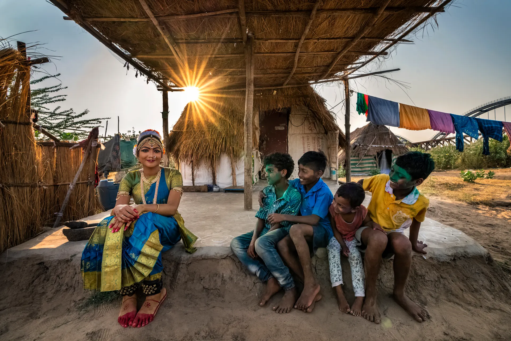

07
అంతర్వేదిAntarvedi — where the river meets the sea
Seven places
one riverఏడు చోట్లు · ఒకే నది
one riverఏడు చోట్లు · ఒకే నది

05 · కోనసీమKonaseema
 03
03
One river, and everything it grew — seven places, picked like sweets from a bazaar tray.

03